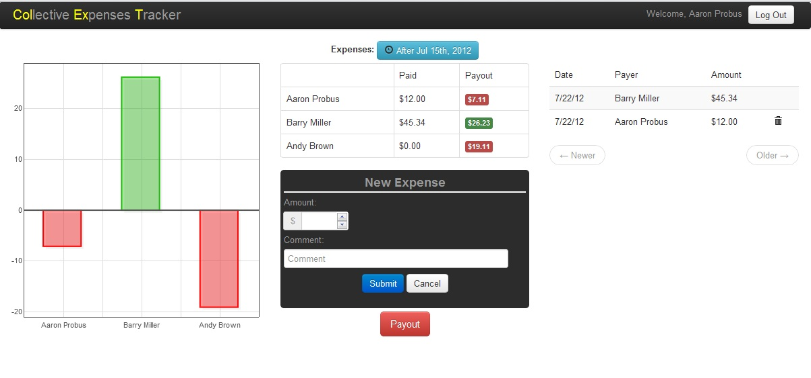
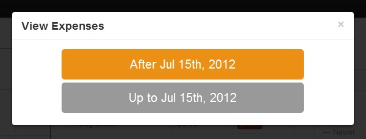
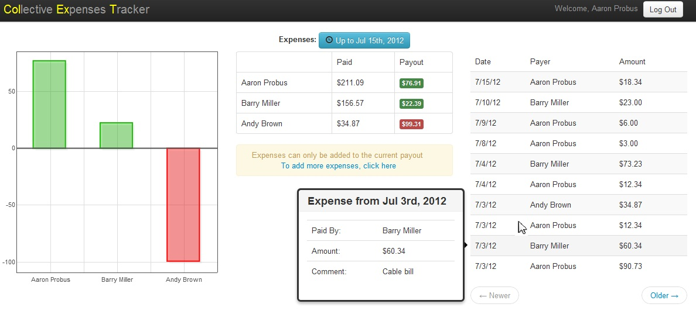

Colext
What it is
Colext, or Collective Expenses Tracker, is made to keep track of expenses that are split evenly between a group of people. An example of this would be roommates splitting all the bills (water, gas, electricity, cable, etc) evenly. When deciding if you want to use Colext, keep these things in mind:
- Expenses are split evenly across the whole group, there is no partial expense splitting
- You can only belong to one group
So, if you are looking to keep track of individual expenses, Colext is not for you. However, if you find yourself keeping track of expenses with the same group of people over and over, Colext can help.
What it does
Colext keeps track of how much everyone has spent on shared expenses compared to the rest of the members of the group, and uses that to determine who owes/is owed money. To do so, Colect uses the simple formula: [sum of expenses] / [number of people]. If a user has paid more than that amount, they are owed money. If they have paid less, they owe money. It's that simple.
Features

Colext was designed as a one page web application, there there is no jumping around. It features a list of expenses, an expenses summary, and a visual of the summary. To view past expenses, click the button in the top middle of the page to bring up the time span selector.

Select the period which you want to see, and the history page will be brought up. (The period which you are currently viewing is in orange)

To keep things simple, expenses can only be added to the current time span. Note, to view the expense's comment, simply hover over it to get the full view.
Credits
Colext relies on several projects, including, but not limited to:
Node (www.nodejs.org)
All of the backend code was written in node. I chose it because that's what I'm using at work, and you can never get enough practice.
Emberjs (www.emberjs.com)
Used for all of the client side MVC. It is amazing for keeping data/views synced up.
Bootstrap (http://twitter.github.com/bootstrap/)
Makes the UI look a lot nicer than it would have if I had to do all the UI work.
Glyphicons (http://glyphicons.com/)
All of the icons are from Glyphicons, through Bootstrap.
License
Copyright (C) 2012 Aaron Probus
Permission is hereby granted, free of charge, to any person obtaining a copy of this software and associated documentation files (the "Software"), to deal in the Software without restriction, including without limitation the rights to use, copy, modify, merge, publish, distribute, sublicense, and/or sell copies of the Software, and to permit persons to whom the Software is furnished to do so, subject to the following conditions:
The above copyright notice and this permission notice shall be included in all copies or substantial portions of the Software.
THE SOFTWARE IS PROVIDED "AS IS", WITHOUT WARRANTY OF ANY KIND, EXPRESS OR IMPLIED, INCLUDING BUT NOT LIMITED TO THE WARRANTIES OF MERCHANTABILITY, FITNESS FOR A PARTICULAR PURPOSE AND NONINFRINGEMENT. IN NO EVENT SHALL THE AUTHORS OR COPYRIGHT HOLDERS BE LIABLE FOR ANY CLAIM, DAMAGES OR OTHER LIABILITY, WHETHER IN AN ACTION OF CONTRACT, TORT OR OTHERWISE, ARISING FROM, OUT OF OR IN CONNECTION WITH THE SOFTWARE OR THE USE OR OTHER DEALINGS IN THE SOFTWARE.